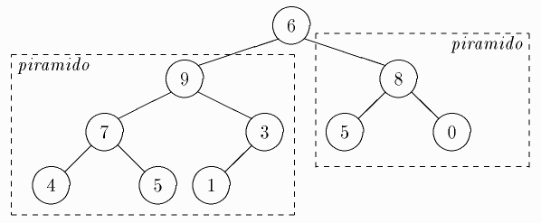

Eĉ se la du subarboj de duuma arbo estas piramidoj, la tuta arbo ne nepre estas piramido. Sed fari tian arbon piramido estas afero tre facila: sufiĉas viziti la vicon de la pli grandaj (pra)idoj, farante la necesajn permutojn, do, fari ne pli ol a paŝojn, se a estas la alto de la arbo (t.e. la longo de la plej longa vojo en la arbo). Tiel, por ekzempla arbo

sufiĉas fari permutojn de 6 kun 9 kaj 7. Tiun procedon ni nomas
rearanĝo de la arbo, aŭ mergo de ĝia radiko.
Estas sciate (vd duuma arbo), ke duuman arbon eblas prezenti per vektoro. Inverse, ĉe la piramida ordigo oni rigardas la ordigendan sekvencon v, apartenantan al (ekz-e)
Unue, ni faru la vektoron piramido — tiun stadion ni nomas piramidigo; due, tiun piramidon ni finordigos — la ordiga stadio.
Por realigi la piramidigon oni atentu, ke facilas apliki la rearanĝon al tiaj nodoj, kies idoj (se tiuj idoj ekzistas) jam estas piramidoj. Tian econ havas la vektoranoj kun la indicoj i∈[n DIV 2+1..n], ĉar ili estas senidaj. Do, oni piramidigas rekursie kaj «retropaŝe».
Post la piramidigo oni ricevas en v[1] la maksimuman datumanon. Permutante ĝin kun v[n] oni reduktas la problemon al la ordigo de la subvektoro v[1..n−1], kies du subarboj jam estas piramidoj; oni mergas v[1] en la subarbon, permutas v[1] kun v[n−1], ktp.
PROCEDURO piramidaOrdigo(VAR v:vektoro);
VAR i: entjera; x: reela;
PROCEDURO mergu(r, f: entjera); {-- radikon r en arbon v[r..f]}
VAR d, l: entjera;
STARTO
d := 2 * i;
l := d + 1;
SE d ≤ f TIAM STARTO {-- trovu maks(v[r], v[l], v[d]): }
SE v[r] ≥ v[d] TIAM d := r;
SE l ≤ f TIAM SE v[l] > v[d] TIAM d := l;
SE r ≠ d TIAM STARTO {-- permuto kaj mallevo: }
x := v[r]; v[r] := v[d]; v[d] := x;
mergu(d, f);
FINO
FINO
FINO {de "mergu"};
STARTO { la korpo de piramidaOrdigo. Unue la piramidigo: }
POR i := n DIV 2 SUBE 1 FARU mergu(i,n);
POR i := n SUBE 2 FARU STARTO { ordigo de la piramido: }
x := v[i]; v[i] := v[1]; v[1] := x;
mergu(1, i - 1);
FINO
FINO { de "piramidaOrdigo" }